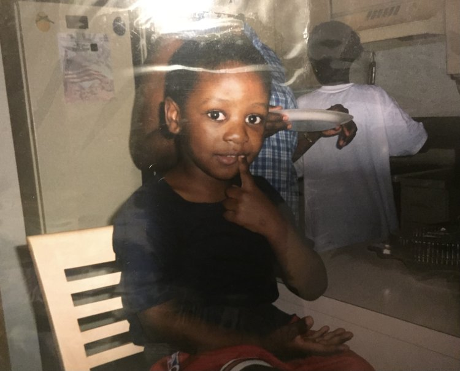

I want to note that this is the first time I'm acknowledging my stutter as a "disability". For years, I never really thought of myself as disabled, but when I take a moment to consider what a disability is, I would argue that a stutter checks off almost all the boxes. Having to change how you communicate really adds a lot of obstacles to your life, and yet while living with a stutter is a very stressful experience, there are some silver linings to this dark cloud that’s been looming over me.
/The two things I’d say are most affected by my stutter, would be my communication and confidence. When I get caught on a word or syllable I usually feel it about to happen, because my jaw spasms and my mouth starts to dry up. Usually, I try to get around this by thinking of a synonym that's easier to pronounce, or just completely rephrasing what I was trying to say, but a drawback to that method is that sometimes the message I'm trying to convey gets lost in translation. The times when I'm stuck for three or more seconds on the same syllable is when my anxiety starts to come into play. Those seconds feel like years, my heart rate increases, my palms start to sweat, and my breathing is all over the place. It's a vicious cycle, honestly; when I'm worried I'll stutter, I stutter more. Stuttering leads to frustration and frustration leads to more stuttering. Any negative emotion really, triggers my stutter, so not only does this affect my physical ability to speak, but it also affects my willingness to communicate. More specifically, talking about my feelings, or giving someone bad news is extremely difficult for me, physically and emotionally.
One of the biggest reasons I had such low self-esteem was my disability. I always dreaded the first day of school, when we all had to introduce ourselves; I despised getting called on to read out loud in class, and oral presentations were the bane of my existence. While I admit that nowadays, people are much more kind to us stutterers, kids were brutal when I was in school. I had a hard time stepping out of my comfort zone and tried to get by saying as little as possible. Adults weren't any better either, they’d think I was lying when I couldn't explain my side of the story quickly enough, or get visibly frustrated themselves when I took too long to ask/answer a question. Let me put it like this: for the majority of your childhood, every time you spoke to someone, you either got made fun of or scolded, so imagine how difficult it would be to communicate with anyone when you were basically punished for years for trying to do so.
On the bright side, I started to pick up some skills while in speech therapy that I think still help me to this day. One of the main parts of my sessions was exercises to work on my breath control and maintaining a cadence as I spoke. Part of being able to do that relies on not getting flustered when something unexpected happens. Going back to that vicious cycle of stuttering, getting frustrated, and stuttering more, those heightened emotions will almost always affect your breathing and heart rate. The more riled up I got, the harder it was to control, but with the support of my therapists, I became very adept at keeping my breathing steady, and subsequently, keeping my emotions in check.
Another big part of speech therapy is reading aloud. I would read a two or three-page excerpt without rushing, and take pauses at appropriate times. My therapists would then have me explain the story in my own words, practicing fluency techniques. My favorite part was the poetry, and I think this is really what sparked my interest in writing as well; it became my preferred method of communication. I can put my thoughts on paper with eloquence and brevity that I could never hope to achieve speaking, but thanks to speech therapy, I’ve become a pretty effective orator, all things considered. Yes, I still have my blocks, and yes, I still get annoyed when they happen, but they’re now farther and fewer in between.
Again, while I concede that times are different now, and people are generally more accepting of the disabled community (and marginalized populations overall), It would be a shameful showing of naivety or even willful ignorance to believe that said groups don't still receive prejudice. To be frank, I didn't have a concrete reason to write this at first; it could have been years of frustration finally erupting out of a once-dormant volcano, or a calling to enlighten the masses about how important it is to facilitate a supportive environment for children who are going through similar struggles. Most likely, both are true, but nonetheless, it simply felt like something that needed to be said. This goes for everyone, disabled or not: Instead of ridiculing someone’s weaknesses, how about we praise them for their strengths instead?